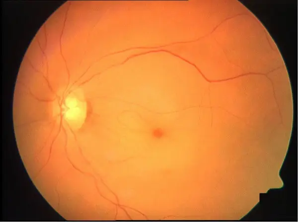

DX.9 — Occlusion artérielle rétinienne 🚩 E1
L'occlusion de l'artère centrale de la rétine est un accident vasculaire cérébral de l'œil : la rétine interne meurt en quelques heures et le cerveau reste menacéS2S4. Le médecin qui voit une perte visuelle monoculaire brutale et indolore appelle donc la filière AVC sans attendre l'ophtalmologue de garde. Il note l'heure du dernier état visuel normal, car toute décision de reperfusion en dépendS13S4. Il cherche enfin une artérite à cellules géantes chez tout patient âgé de plus de 50 ansS1. Le tri commun des pertes visuelles reste dans le cours du symptôme.
1. Définition
Le Collège des ophtalmologistes universitaires de France (COUF) définit l'occlusion artérielle rétinienne comme l'interruption brutale du flux dans l'artère centrale de la rétine ou dans l'une de ses branchesS1. L'occlusion de l'artère centrale (OACR) prive toute la rétine interne de sang, alors que l'occlusion de branche (OBACR) n'en touche qu'un secteurS1. La recommandation de l'European Stroke Organisation (ESO) de 2025 nomme l'OACR « accident vasculaire de l'œil » et la range parmi les accidents ischémiquesS4. L'essai européen THEIA la décrit aussi comme un sous-type d'accident vasculaire cérébral ischémiqueS5.
2. Épidémiologie (Suisse, puis Europe)
Le Registre suisse des AVC indique une incidence de l'OACR de 1,8 cas pour 100 000 habitants, et jusqu'à 10 pour 100 000 après 80 ansS2. Sur la population suisse de 2019, cette incidence prédit environ 156 cas par an, mais le registre n'en recense que la moitiéS2. Les données suisses montrent un patient âgé de 71,8 ans en moyenne, masculin dans près de deux cas sur troisS2. Les registres européens confirment ce profil, et l'histoire naturelle explique le rang 🚩 E1.
Ce que mesurent les données suisses
Le Registre suisse des AVC a enregistré 397 OACR et 32 816 accidents ischémiques cérébraux entre 2014 et 2019, dans 20 centres et unités cérébrovasculairesS2. Les patients atteints d'OACR avaient 71,8 ans en moyenne, et 37,3 % étaient des femmesS2. L'hyperlipidémie, l'artériopathie périphérique et les traitements antithrombotiques préalables y étaient plus fréquents que dans l'accident cérébralS2. Les cas enregistrés passent de 24 en 2014 à 130 en 2019, ce qui reflète surtout une meilleure saisie et un recours accru aux centresS2.
| Donnée | Valeur | Population, période et source |
|---|---|---|
| Incidence estimée | 1,8 à 1,9 pour 100 000 ; jusqu'à 10 pour 100 000 après 80 ans | Revue du Registre suisse des AVC, 2022S2 |
| Cas attendus en Suisse | Environ 156 par an pour 8 606 033 habitants | Population suisse de 2019S2 |
| Cause dominante | Athérosclérose des grosses artères 30,5 % ; cardio-embolie 10,6 % | 397 OACR, 2014–2019S2 |
| Ischémie cérébrale associée | 32,7 % à l'imagerie de contrôle | Même cohorteS2 |
| Ischémie cérébrale associée | 24 patients sur 69 imagés (35 %) | Collaboration TRISP, dix centres européens dont ZurichS3 |
| Hôpital ophtalmique Jules-Gonin (Vaud) | 9 OACR et 11 OBACR en 2019 ; 14 OACR et 7 OBACR en 2020 | Cohorte hospitalière régionaleS7 |
La cohorte vaudoise ne montre aucune hausse des occlusions artérielles pendant la première année de la pandémie de COVID-19 (rapport d'incidence 1,04)S7. Le chiffre régional reste faible, car un hôpital tertiaire ne voit qu'une partie des cas du cantonS7.
Ce que disent les registres européens
Le registre allemand oregis, analysé par l'Hôpital universitaire de Bâle, compte 832 occlusions artérielles rétiniennes entre 2010 et 2025S9. Deux tiers des patients y sont des hommes, et leur âge moyen atteint 70 ansS9. À la première visite, 33 % gardent une acuité décimale supérieure à 0,5, mais 30 % ne perçoivent que les mouvements de la main ou moinsS9. Le COUF situe la fréquence de l'OACR à une consultation ophtalmologique sur 10 000, le plus souvent autour de la soixantaineS1. L'atteinte reste bilatérale dans 1 à 2 % des cas seulementS1.
Histoire naturelle : ce que devient l'œil, ce que devient le cerveau
Une récupération visuelle spontanée survient dans moins de 30 % des OACR, et la perte monoculaire persistante altère durablement la qualité de vieS2. À l'Hôpital universitaire de Zurich, 89,5 % des yeux limités au compte des doigts ne s'amélioraient pas pendant le suiviS8. Dans oregis, la répartition des acuités reste presque inchangée entre la première visite et le contrôleS9. L'œdème rétinien régresse en 4 à 6 semaines, puis la papille pâlit et les artères deviennent grêlesS1. En l'absence de reperfusion, un glaucome néovasculaire peut compliquer l'évolutionS1.
L'occlusion de branche évolue mieux : l'acuité dépasse 5/10 dans plus de 80 % des cas, mais l'amputation du champ visuel persiste souventS1. Le cerveau reste exposé, car l'ESO compare l'OACR à l'accident ischémique transitoire par son risque d'AVC à court termeS4.
3. Physiopathologie
La rétine ne se comprend qu'avec sa double vascularisation, que la fenêtre Base à connaître installe d'abord. Un embole ou un thrombus bloque une artère terminale, sans collatérale, si bien que la rétine interne s'arrête de fonctionner en quelques minutesS1. Les délais de mort cellulaire fondent l'urgence, et la corrélation relie chaque lésion à son examen et à son traitement.
Base à connaître : deux circulations pour une seule rétine
L'artère centrale de la rétine naît de l'artère ophtalmique, elle-même branche de la carotide interne, et nourrit la rétine interne, macula et fovéa comprisesS2. La choroïde reçoit les artères ciliaires postérieures et nourrit les couches externes, dont les photorécepteursS1. La circulation rétinienne est terminale : aucune artère voisine ne supplée une branche occluseS1. Le chemin carotide, artère ophtalmique, artère centrale explique pourquoi une plaque carotidienne envoie des emboles dans l'œil.
La fovéola ne contient pas de couches internes, car elle se nourrit de la choroïde. Elle reste donc rouge quand la rétine qui l'entoure blanchit, ce qui produit la tache rouge ceriseS1. Une branche cilio-rétinienne, née de la circulation ciliaire, peut irriguer un secteur entre papille et macula ; la rétinographie de référence du COUF en montre uneS1.
Les délais qui fondent l'urgence
Selon le COUF, les premières lésions ischémiques définitives de la rétine interne apparaissent dès 90 minutes, puis elles s'étendent jusqu'à 6 heures environS1. L'équipe de Zurich retient un dommage irréversible entre 90 et 240 minutes après l'occlusionS3. Le Registre suisse rappelle que les cellules ganglionnaires peuvent souffrir après 12 à 15 minutes de non-perfusion complète, alors qu'un modèle chez le singe tolère près de 4 heuresS2. Cet écart dépend du caractère complet de l'occlusion et des suppléances, comme dans l'accident cérébralS2. La recanalisation spontanée de l'artère centrale reste rare, d'où l'intérêt d'une reperfusion précoceS3.
Corrélation : perturbation, exploration, thérapeutique
Le tableau suit la chaîne de l'amorce à la séquelle ; chaque ligne relie un mécanisme à l'examen qui le montre et au geste qui le corrige.
| Perturbation | Exploration qui la montre | Thérapeutique (mécanisme) |
|---|---|---|
| Embole carotidien : la plaque athéromateuse lâche un fragment dans l'artère ophtalmiqueS1 | Angioscanner ou angio-IRM des troncs supra-aortiques, échodopplerS2 | Antiagrégant plaquettaire, statine, endartériectomie si la sténose le justifieS2 |
| Embole cardiaque : un thrombus de l'oreillette ou une végétation migreS1 | Électrocardiogramme, surveillance rythmique, échocardiographie transœsophagienneS1 | Anticoagulation si une fibrillation auriculaire est trouvée, décidée par l'équipe neurovasculaire |
| Thrombose inflammatoire : l'artérite à cellules géantes rétrécit l'artèreS1 | Protéine C réactive, échographie ou biopsie de l'artère temporaleS1 | Corticothérapie immédiate, qui éteint l'inflammation pariétale (DX.10) |
| Ischémie de la rétine interne : œdème cellulaire et opacificationS1 | Fond d'œil, tomographie en cohérence optiqueS1 | Reperfusion précoce, seule capable de sauver le tissu viableS1 |
| Hypoxie chronique : sécrétion de facteurs angiogéniques et néovaisseauxS1 | Gonioscopie, pression intraoculaire, angiographieS1 | Laser des zones ischémiques, qui réduit le stimulus angiogéniqueS1 |
4. Démarche diagnostique
Dans la perte visuelle aiguë du LOT, l'OACR occupe le rang 🚩 E1, devant l'artérite à cellules géantes (E2) et le décollement de rétine (E3). Le médecin confirme d'abord que la perte touche un seul œil, car un déficit des deux yeux oriente vers le chiasma ou le cortex. Il écarte ensuite les diagnostics qui imitent l'occlusion, puis il sépare la forme emboligène de la forme artéritique. L'artérite ne cause qu'environ 2 % des OACR, mais elle menace l'autre œil en quelques joursS1.
Diagnostics discriminants, les graves d'abord
Le tableau classe les alternatives par gravité ; chacune porte le signe qui tranche, le piège et la conduite si elle se confirme.
| Diagnostic | Élément qui tranche | Piège | Conduite si positif |
|---|---|---|---|
| 🚩 OACR artéritique (artérite à cellules géantes) | Claudication de la mâchoire, céphalée inhabituelle, CRP élevée ; ischémie choroïdienne associéeS1 | Un âge inférieur à 70 ans ou une CRP peu élevée n'écartent pas le diagnostic à eux seuls | Corticothérapie sans attendre la biopsieS1 ; protocole au DX.10 |
| 🚩 AVC occipital ou rétrochiasmatique | Le déficit touche le même hémichamp des deux yeux, et le fond d'œil est normal | Le patient attribue souvent un hémichamp temporal à l'œil du même côté | Filière AVC immédiate |
| 🚩 Neuropathie optique ischémique antérieure | L'œdème papillaire est le signe initial le plus évidentS1 | Une NOIA artéritique et une OACR artéritique partagent la même cause | CRP et recherche d'artérite le jour mêmeS1 |
| 🚩 Décollement de rétine | Phosphènes, corps flottants, voile progressif ; rétine soulevée | Le voile évoque à tort un embole | Avis rétinien urgent (DX.7) |
| Occlusion veineuse rétinienne | Hémorragies en flammèches et veines dilatées et tortueuses | Une occlusion mixte, artérielle et veineuse, existe | Bilan propre (DX.6) |
5. Anamnèse ciblée et drapeaux rouges
Le médecin fixe d'abord l'heure du dernier état visuel normal, car l'AIPS d'Actilyse® limite la thrombolyse de l'AVC à 4,5 heures après ce momentS13. Il caractérise ensuite la perte visuelle, puis il recherche une amaurose transitoire antérieure et des signes d'artérite. Une douleur oculaire ou cervicale rend le tableau atypique et oriente ailleurs.
Il demande les antécédents et les médicaments, car un anticoagulant oral efficace contre-indique la thrombolyseS13. Les drapeaux rouges imposent chacun une action précise dans la minute.
La perte visuelle, caractérisée point par point
| Caractère | Forme typique de l'OACR | Pourquoi |
|---|---|---|
| Siège | Un seul œil, vérifié œil par œil en cachant l'autre | L'artère centrale ne dessert qu'une rétine |
| Mode d'installation | Brutal, en secondes ; souvent décrit comme un rideau qui tombe ou un assombrissement globalS2 | L'occlusion d'une artère terminale coupe l'apport d'un coup |
| Intensité | Acuité effondrée, le plus souvent limitée à la perception lumineuseS1 | La macula dépend de l'artère centrale |
| Douleur | Absente ; l'œil reste blancS1 | La rétine ne possède pas de fibres nociceptives |
| Horaire | Souvent constatée au réveil : 28,6 % des OACR du registre suisse avaient un début inconnuS2 | Le début inconnu se date au dernier moment où la vision était normale |
| Signes associés | Aucun dans la forme emboligène isolée ; déficit neurologique si un embole a aussi touché le cerveau | La même source alimente l'œil et l'hémisphère |
La perte est atypique si elle est douloureuse, progressive sur des jours ou binoculaire ; le médecin cherche alors un glaucome aigu, une névrite optique ou une atteinte rétrochiasmatique. Une amputation horizontale du champ, avec une acuité conservée, oriente vers une occlusion de brancheS1.
L'amaurose transitoire, symptôme d'alarme
Le patient décrit une perte monoculaire qui récupère totalement en quelques minutes, comme dans la vignette du COUFS1. Ces épisodes témoignent le plus souvent d'emboles spontanément résolutifs, souvent nés d'une plaque carotidienneS1. Le symptôme est typique s'il est monoculaire, bref et indolore ; il devient atypique s'il touche les deux yeux ou s'accompagne de céphalée. Il peut précéder une OACR ou une neuropathie optique ischémique, ce qui impose le même bilan qu'un accident ischémique transitoireS1S4.
Les signes qui font penser à l'artérite
Le COUF retient la claudication intermittente de la mâchoire comme le signe le plus évocateur de l'artérite à cellules géantesS1. La céphalée inhabituelle, l'hypersensibilité du cuir chevelu au peigne, les douleurs des ceintures, la fièvre prolongée et l'altération de l'état général complètent le tableauS1. Ces signes sont typiques après 50 ans ; leur absence ne suffit pourtant pas à écarter l'artérite, que l'examen biologique doit chercherS1. La revue bâloise de 2026 rappelle que l'artérite reste rare dans l'OACR, mais qu'elle doit toujours être envisagéeS10.
Douleur oculaire ou cervicale : un tableau atypique
Une douleur oculaire avec œil rouge ne fait pas partie de l'OACR aiguë ; elle évoque une fermeture de l'angle ou, plus tard, un glaucome néovasculaireS1. Une douleur cervicale ou un traumatisme récent chez un sujet jeune font chercher une dissection carotidienne, que le bilan carotidien doit viserS1. Le médecin note la latéralité, le début et l'intensité de cette douleur, car elle change la cible de l'imagerie.
Antécédents et médicaments : chaque réponse modifie la conduite
| Question | Raison |
|---|---|
| Hypertension, diabète, dyslipidémie, tabac ? | Ce sont les diagnostics associés les plus importants des occlusions artérielles rétiniennesS11 |
| Palpitations ou fibrillation auriculaire connue ? | La fibrillation auriculaire figure parmi les diagnostics associés majeursS11 |
| Anticoagulant oral, héparine récente ? | Un anticoagulant efficace contre-indique Actilyse® ; aucun patient suisse revascularisé n'était sous anticoagulant oral directS13S2 |
| Chirurgie, hémorragie ou traumatisme crânien récents ? | Ces situations figurent parmi les contre-indications de la thrombolyseS13 |
| Sujet jeune sans facteur de risque, fausses couches, thromboses ? | Ce profil justifie la recherche de causes rares, dont un syndrome des antiphospholipidesS11S12 |
| Fracture d'un os long récente, cardiopathie valvulaire, myxome connu ? | Ces situations produisent des emboles graisseux, valvulaires ou tumorauxS1 |
Drapeaux rouges et action immédiate
| Drapeau rouge | Signification | Action immédiate |
|---|---|---|
| 🚩 Perte monoculaire brutale depuis moins de 4,5 heures | La fenêtre de thrombolyse reste ouverteS4 | Appeler le 144 et le centre AVC ; ne pas adresser en cabinet |
| 🚩 Claudication de la mâchoire, céphalée nouvelle après 50 ans | Une artérite menace l'autre œilS1 | CRP le jour même et corticothérapie sans attendre la biopsieS1 |
| 🚩 Déficit moteur, sensitif ou trouble du langage associé | L'embole a aussi atteint le cerveau | Filière AVC, imagerie cérébrale en urgence |
| 🚩 Amaurose transitoire répétée | Une source emboligène reste activeS1 | Bilan d'accident ischémique transitoire le jour mêmeS4 |
6. Examen physique ciblé, région par région
L'examen ne doit retarder ni l'appel du 144 ni l'imagerie cérébrale ; il se fait donc en quelques minutes, dans l'ordre où le médecin le conduit. Il mesure d'abord l'acuité de chaque œil, puis il teste les pupilles et le champ visuel par confrontation. Il inspecte ensuite le segment antérieur et regarde le fond d'œil.
Il palpe ensuite les artères temporales et le cuir chevelu, puis il examine le cou et le cœur. Il termine par un examen neurologique et la pression artérielle, qui conditionnent la thrombolyse.
Région 1 — Acuité visuelle de chaque œil
Signe à rechercher — L'acuité de l'OACR tombe le plus souvent à la perception lumineuse, alors que l'œil sain lit normalementS1.
Geste — Le médecin cache un œil avec la paume, fait lire une échelle à distance, puis compte les doigts, montre la main et teste la lumière s'il le faut.
Aspect — L'équipe de Zurich convertit ces niveaux en logMAR : compte des doigts 2,0, mouvements de la main 2,3, perception lumineuse 2,6S3.
Piège — Une acuité conservée n'écarte pas une occlusion de branche, qui ampute surtout le champ visuelS1. L'essai THEIA n'incluait que des acuités inférieures à 20/400 sur l'échelle de Snellen, ce qui montre la profondeur habituelle du déficitS5.
Région 2 — Pupilles : réflexe photomoteur et déficit afférent
Signe à rechercher — Le COUF décrit une pupille aréflexique et dilatée dès les premières minutes du côté atteintS1.
Geste — Dans une pièce sombre, le médecin porte la lampe sur un œil puis sur l'autre, en la balançant toutes les deux secondes.
Aspect — L'éclairage de l'œil atteint ne fait contracter aucune des deux pupilles, alors que l'éclairage de l'œil sain fait contracter les deuxS1.
Piège — Ce déficit afférent prouve une atteinte de la rétine ou du nerf optique ; il manque dans un trouble des milieux ou dans un déficit d'origine corticale.
Région 3 — Champ visuel par confrontation
Signe à rechercher — L'occlusion de branche donne une amputation souvent horizontale, limitée au territoire de l'artère occluseS1.
Geste — Face au patient, à un mètre, le médecin teste chaque œil séparément en comptant les doigts dans les quatre quadrants.
Aspect — Le déficit respecte la ligne horizontale, car les branches artérielles supérieure et inférieure ne franchissent pas le raphé.
Piège — Un déficit qui respecte la ligne verticale et touche les deux yeux évoque une atteinte rétrochiasmatique, donc un AVC cérébral.
Région 4 — Segment antérieur
Signe à rechercher — L'œil de l'OACR aiguë est blanc et indoloreS1.
Geste — Le médecin regarde la conjonctive, la cornée et la pupille à la lampe ; l'ophtalmologue mesure la pression intraoculaire.
Aspect — Une rougeur, un œdème cornéen ou une pression élevée orientent vers un glaucome aigu, ou vers un glaucome néovasculaire tardifS1.
Région 5 — Fond d'œil
Signe à rechercher — Dans les heures qui suivent, la rétine devient blanchâtre et œdémateuse, alors que la fovéa garde sa couleur : c'est la tache rouge ceriseS1.
Geste — L'ophtalmologue dilate la pupille et examine le pôle postérieur, les artères et la papille ; le médecin de premier recours peut tenter un ophtalmoscope direct.
Aspect — Les artères sont grêles, la colonne sanguine peut paraître granuleuse, et un embole se voit parfois à une bifurcationS1.
Piège — Au tout début, la rétine peut paraître presque normale, d'où l'intérêt de la tomographie en cohérence optiqueS1S4. L'occlusion de branche montre un œdème sectoriel, avec un embole souvent visible à une bifurcationS1. La rétinographie interprétée montre ces repères.
Région 6 — Artères temporales et cuir chevelu
Signe à rechercher — Le COUF décrit des artères temporales indurées et un cuir chevelu douloureux au peigne dans l'artériteS1.
Geste — Le médecin palpe des deux côtés, en avant du tragus puis le long de la tempe, et il compare la force du pouls.
Aspect — Une artère dure, épaissie, sensible et peu battante est suspecte.
Piège — Une artère normale à la palpation n'écarte pas l'artérite, que la CRP et l'imagerie doivent chercher (DX.10).
Région 7 — Cou et cœur
Signe à rechercher — Le médecin cherche un rythme irrégulier, car la fibrillation auriculaire figure parmi les diagnostics associés majeursS11.
Geste — Il prend le pouls radial pendant une minute, ausculte le cœur aux quatre foyers, puis ausculte chaque carotide sous l'angle de la mâchoire.
Comment il sonne — Un souffle carotidien est un bruit doux, systolique, entendu sur le trajet de l'artère.
Piège — L'absence de souffle n'écarte pas une sténose serrée ; dans le registre suisse, 30,7 % des OACR avaient une sténose d'au moins 50 % à l'angiographieS2.
Région 8 — Examen neurologique
Signe à rechercher — Le médecin cherche un déficit moteur ou sensitif d'un hémicorps, un trouble du langage ou une asymétrie faciale.
Geste — Il fait tenir les bras tendus, sourire, parler, puis il teste la sensibilité des deux côtés.
Aspect — Un déficit associé signe un embole cérébral concomitant ; une ischémie cérébrale silencieuse existe pourtant dans un tiers des casS2.
Piège — Un examen neurologique normal ne dispense donc jamais de l'imagerie cérébrale, qui reste obligatoireS2.
Région 9 — Pression artérielle et glycémie capillaire
Signe à rechercher — L'hypertension figure parmi les diagnostics associés les plus importantsS11. Dans la cohorte TRISP, la pression systolique moyenne à l'admission atteignait 156 mmHg chez les patients thrombolysésS3.
Geste — Le médecin mesure aux deux bras, puis il contrôle la glycémie capillaire.
Piège — Une hypertension sévère non contrôlée contre-indique Actilyse®, ce qui impose de la traiter avant toute thrombolyseS13.
7. Approche syndromique
Le tableau se décompose en cinq syndromes ; chacun sépare les signes fonctionnels, rapportés par le patient, des signes physiques, constatés par le médecin. Le tableau de synthèse les rassemble, et chaque signe ouvre sa définition.
7.1 Syndrome d'occlusion de l'artère centrale
La perte est brutale, profonde et indolore ; l'examen montre un déficit pupillaire afférent et une tache rouge ceriseS1.
7.2 Syndrome d'occlusion de branche
Le patient perd un secteur du champ visuel, souvent horizontal, et garde une acuité correcte si la macula est épargnée ; l'examen montre un œdème sectoriel et parfois un emboleS1.
7.3 Syndrome d'amaurose transitoire
Le patient décrit une perte monoculaire récupérée en quelques minutes ; l'examen peut rester normal, ce qui ne réduit pas le risque d'AVCS1S4.
7.4 Syndrome artéritique
La perte s'accompagne de céphalée, de claudication de la mâchoire et d'altération générale ; l'examen montre une ischémie choroïdienne et une CRP élevéeS1.
7.5 Syndrome hémisphérique associé
Un déficit moteur, sensitif ou du langage accompagne la perte visuelle, car l'embole a aussi gagné une artère cérébrale ; l'imagerie montre alors l'infarctusS2.
Syndromes, signes fonctionnels et signes physiques
| Syndrome | Signes fonctionnels | Signes physiques |
|---|---|---|
| 7.1 Occlusion centrale | Perte brutale, indolore, souvent jusqu'à la perception lumineuseS1 | Pupille aréflexique, rétine blanchâtre, tache rouge ceriseS1 |
| 7.2 Occlusion de branche | Amputation sectorielle, souvent horizontaleS1 | Œdème sectoriel, embole à une bifurcationS1 |
| 7.3 Amaurose transitoire | Perte récupérée en quelques minutesS1 | Examen souvent normal |
| 7.4 Artéritique | Céphalée, claudication de la mâchoire, fièvreS1 | Artère temporale indurée, ischémie choroïdienne, CRP élevéeS1 |
| 7.5 Hémisphérique associé | Faiblesse, engourdissement, trouble du langage | Déficit focal ; ischémie à l'imagerieS2 |
Déficit pupillaire afférent relatif
Le déficit pupillaire afférent désigne une pupille qui se contracte moins quand on éclaire l'œil malade que quand on éclaire l'œil sain. Il apparaît parce que la rétine ischémique n'envoie plus de signal lumineux au mésencéphale. Le geste de recherche est l'éclairage alterné, décrit avec l'examen des pupilles.
Tache rouge cerise
La tache rouge cerise désigne la fovéa restée rouge au centre d'une macula devenue blanche par œdème ischémiqueS1. Elle apparaît en quelques heures, car l'œdème met du temps à opacifier les couches internesS1. Le médecin la cherche à l'ophtalmoscope, et la recommandation de l'ESO rappelle qu'un examen très précoce peut encore la manquerS4.
Œdème rétinien sectoriel
L'œdème sectoriel désigne un blanchiment limité au territoire d'une branche artérielle, nettement bordé par la rétine saine voisineS1. Il traduit l'ischémie d'un secteur seulement, ce qui explique une acuité souvent conservée. La reperfusion survient en général en quelques jours, puis l'œdème disparaît en quelques semainesS1.
Embole rétinien visible
L'embole apparaît comme un petit corps brillant ou blanchâtre logé dans une artère, souvent à une bifurcationS1. Sa présence oriente vers une plaque carotidienne ou une source cardiaqueS1. Son absence ne permet aucune conclusion, car l'embole reste parfois invisible au fond d'œilS1.
Ischémie choroïdienne
L'ischémie choroïdienne correspond à un défaut de remplissage de la circulation ciliaire, visible à l'angiographieS1. Elle oriente vers l'artérite, car l'inflammation touche aussi les artères ciliaires postérieures. Pour le COUF, l'association d'une neuropathie optique ischémique et d'une ischémie choroïdienne est très évocatrice de l'artériteS1.
8. Diagnostic positif et critères
Le diagnostic est clinique : il associe une perte monoculaire brutale et indolore à un fond d'œil d'ischémie rétinienne interneS1. Aucune société savante ne publie de score validé ; les critères d'inclusion des essais européens servent donc de repère pratique. La tomographie en cohérence optique apporte une preuve objective quand le fond d'œil reste discretS1S4.
Ce qui suffit, ce qui ne suffit pas
| Critère | Contenu | Source |
|---|---|---|
| Clinique (nécessaire) | Perte monoculaire soudaine, sévère et persistanteS5 | THEIA 2025 |
| Sévérité (essai) | Acuité inférieure à 20/400 sur l'échelle de SnellenS5 | THEIA 2025 |
| Forme non artéritique (essai) | Absence d'artérite, début dans les 4,5 heuresS6 | TenCRAOS 2026 |
| Fond d'œil | Œdème blanchâtre, tache rouge cerise, artères grêlesS1 | COUF |
| Tomographie en cohérence optique | Hyperréflectivité des couches internes, puis atrophieS1 | COUF |
| Horloge tissulaire (exploratoire) | Épaississement relatif inférieur à 24,5 % : ischémie probablement inférieure à 4,5 heuresS8 | Hôpital universitaire de Zurich 2024 |
La perte brutale suffit pour déclencher la filière AVC ; le fond d'œil précoce, parfois normal, ne suffit pas à l'arrêterS4. L'angiographie fluorescéinique confirme le retard de remplissage, mais elle n'est pas indispensable au diagnosticS1. Le diagnostic d'OACR n'est complet qu'avec sa cause : athérome, embole cardiaque, artérite ou cause rareS1.
9. Examens complémentaires
9.a L'étalon reste clinique : le fond d'œil pose le diagnostic, et l'angiographie fluorescéinique ne sert qu'en cas de douteS1.
9.b En première intention, l'OCT objective l'ischémie, et l'imagerie cérébrale et vasculaire précède toute thrombolyseS2. La biologie et l'électrocardiogramme accompagnent l'imagerie.
9.c Les alternatives couvrent la grossesse, l'insuffisance rénale et l'IRM impossible.
9.d En deuxième intention, l'échocardiographie transœsophagienne et le bilan des causes rares complètent le tableau ; l'interprétation fixe la conduite.
Fond d'œil et rétinographie : l'examen qui pose le diagnostic
Indication — Toute perte monoculaire brutale justifie un fond d'œil dilaté, sans retarder l'appel du centre AVC.
Prescription — Le médecin demande une rétinographie couleur du pôle postérieur des deux yeux, qui garde une trace datée de l'aspect initial.
Occlusion de l’artère centrale de la rétine : tache rouge cerise. Rétinographie couleur du pôle postérieur, œil gauche, phase aiguë

Lisez d'abord seul ce cliché (occlusion de l’artère centrale de la rétine : tache rouge cerise) : cherchez vous-même le signe.
La copie annotée (occlusion de l’artère centrale de la rétine : tache rouge cerise) numérote les repères décrits ci-dessous.
- La fovéola garde sa couleur rouge, car la choroïde sous-jacente reste perfusée ; ce contraste forme la tache rouge cerise.
- La rétine maculaire est blanc-jaune, car l’œdème ischémique opacifie les couches internes.
- La papille se situe ici ; son bord nasal reste net à la phase aiguë.
- Les artères paraissent grêles, car le flux d’amont est interrompu.
- Le cliché précoce peut rester presque normal pendant les premières heures, si bien qu’un fond d’œil banal n’écarte pas l’occlusion.
- L’absence d’embole visible ne permet pas d’écarter une origine embolique, car l’embole reste parfois invisible au fond d’œil.
Ce que l'image décide. Ce fond d’œil impose l’appel immédiat de la filière AVC, une imagerie cérébrale et la recherche d’une artérite chez le sujet de plus de 50 ansS1.

Tomographie en cohérence optique (OCT)
Indication — L'ESO la juge essentielle quand le fond d'œil très précoce ne montre pas encore l'ischémieS4.
Prescription — L'ophtalmologue prescrit un OCT maculaire des deux yeux, l'œil sain servant de référence.
Valeurs — Le normal montre des couches internes fines et peu réfléchissantes ; l'OACR les rend épaisses et hyperréflectives, puis atrophiquesS1.
Datation — À Zurich, un épaississement relatif inférieur à 24,5 % reconnaissait une ischémie de moins de 4,5 heures avec une sensibilité de 92,3 % et une spécificité de 86,2 %S8. Sa valeur prédictive négative atteignait 96,2 % dans cette série de 42 yeuxS8.
Piège — Ce seuil reste exploratoire et ne remplace pas l'heure de début rapportée par le patientS8.
Angiographie à la fluorescéine
Indication — Elle sert au doute diagnostique ou à l'évaluation de la reperfusion ; elle ne doit jamais retarder la filièreS1.
Valeurs normales — Le temps bras-rétine reste inférieur à 15 secondes et le temps de passage artérioveineux inférieur à 3 secondesS1.
Interprétation — Dans l'OACR, le remplissage artériel est extrêmement retardé et le temps bras-rétine peut atteindre plusieurs minutesS1.
Piège — Un défaut de remplissage choroïdien associé oriente vers l'artériteS1.
Imagerie cérébrale et des vaisseaux du cou
Indication — L'imagerie cérébrale est obligatoire avant toute thrombolyse, car elle exclut une hémorragieS2S13.
Prescription — Le centre AVC réalise un scanner ou une IRM cérébrale, couplés à une angiographie des troncs supra-aortiquesS2. Dans le registre suisse, 86,4 % des OACR ont eu un scanner en premier, et 13,6 % une IRMS2.
Interprétation — Une sténose d'au moins 50 % du territoire concerné existait dans 30,7 % des cas, et une occlusion dans 8,3 %S2. Une ischémie cérébrale concomitante, souvent silencieuse, apparaissait chez 32,7 % des patientsS2.
Piège — Dans TRISP, les deux hémorragies intracrâniennes après thrombolyse survenaient chez des patients porteurs d'une ischémie cérébrale associéeS3.
Biologie d'urgence
| Examen | Valeur utile | Interprétation et piège |
|---|---|---|
| Protéine C réactive | Marqueur inflammatoire principal ; la vitesse de sédimentation est aujourd'hui délaisséeS1 | Une élévation chez un patient de plus de 50 ans impose de traiter une artériteS1 |
| Plaquettes | Une numération inférieure à 100 000/mm³ contre-indique Actilyse®S13 | Le résultat doit précéder la décision de thrombolyse |
| Temps de coagulation | Un INR supérieur à 1,3 sous antivitamine K contre-indique Actilyse®S13 | Un aPTT allongé après héparine récente contre-indique aussi la thrombolyseS13 |
| Glycémie | Dans TRISP, la glycémie moyenne atteignait 7,8 mmol/L chez les thrombolysésS3 | Une hypoglycémie peut imiter un déficit neurologique |
| Bilan lipidique, HbA1c | Ils dépistent la dyslipidémie et le diabète associésS11 | Ils guident la prévention secondaire, pas l'urgence |
Électrocardiogramme et surveillance rythmique
Indication — La fibrillation auriculaire figure parmi les diagnostics associés majeurs, et la cardio-embolie causait 10,6 % des OACR suissesS11S2.
Prescription — Le médecin prescrit un électrocardiogramme à douze dérivations à l'admission, puis une surveillance rythmique ; le COUF illustre le bilan par un Holter de 24 heuresS1.
Piège — Une fibrillation paroxystique échappe souvent à l'électrocardiogramme isolé, d'où la surveillance prolongée.
9.c Alternatives selon le terrain
| Situation | Choix | Raison |
|---|---|---|
| Grossesse | IRM sans produit de contraste et échodoppler cervical en priorité | Ces examens n'exposent pas le fœtus aux rayons ; la thrombolyse ne se discute qu'en cas de menace vitaleS13 |
| Insuffisance rénale sévère | Échodoppler cervical et IRM sans gadolinium, ou scanner après discussion du bénéfice | Le produit de contraste iodé aggrave la fonction rénale |
| Allergie au produit iodé | Angio-IRM des troncs supra-aortiques | Elle visualise les sténoses sans iode |
| IRM impossible | Scanner cérébral et angioscanner | Le scanner suffit à exclure l'hémorragie avant thrombolyseS2 |
Échocardiographie
Indication — Le COUF demande un bilan cardiologique, car une cardiopathie emboligène est la deuxième grande cause d'OACRS1.
Prescription — L'échocardiographie transthoracique vient d'abord ; la voie transœsophagienne, plus sensible, recherche un thrombus de l'auricule, une végétation ou un myxomeS1.
Piège — Une échographie transthoracique normale ne permet pas d'exclure une source cardiaque chez le sujet jeune.
Causes rares et sujet jeune
Chez le sujet jeune sans facteur de risque, la revue de Bâle demande la recherche de causes rares, en particulier l'artériteS11. Le COUF mentionne la dissection carotidienne, les maladies systémiques comme le lupus ou la granulomatose avec polyangéite, et les troubles de la coagulationS1. La revue de Francfort propose le bilan de thrombophilie seulement aux patients jeunes, sans facteur de risque classique, ou à risque de syndrome des antiphospholipidesS12. Le choix des tests suit le profil, car un bilan systématique produit des faux positifs.
Interprétation : résultat, signification, conduite
| Résultat | Signification | Conduite |
|---|---|---|
| Imagerie sans hémorragie, délai inférieur à 4,5 heures | La thrombolyse reste discutableS4 | Décision partagée avec le neurologue, hors AIPS |
| Sténose carotidienne homolatérale d'au moins 50 % | Source athéromateuse probableS2 | Avis vasculaire pour endartériectomie ou stentS2 |
| Fibrillation auriculaire | Source cardio-emboliqueS2 | Anticoagulation décidée par l'équipe neurovasculaire |
| CRP élevée après 50 ans | Artérite à cellules géantes possibleS1 | Corticothérapie immédiate (DX.10) |
| Ischémie cérébrale associée | Accident ischémique double, œil et cerveauS2 | Hospitalisation en unité cérébrovasculaire |
| Bilan initial négatif | Cause non trouvée, risque non nul | Surveillance rythmique prolongée et suivi |
10. Arbre décisionnel
L'arbre se lit de haut en bas ; chaque nœud renvoie à un signe, un examen ou une action déjà décrits.
- Si la perte visuelle est monoculaire, brutale et indolore, le médecin appelle le 144 et le centre AVC, puis il note le dernier état normal.
- Si le délai reste inférieur à 4,5 heures, l'équipe AVC réalise l'imagerie cérébrale et discute la thrombolyse hors AIPSS4.
- Si le délai dépasse 4,5 heures, le patient reste adressé le jour même au centre AVC pour le bilan étiologiqueS2.
- Si un signe d'artérite existe après 50 ans, le médecin dose la CRP et débute la corticothérapie sans attendre la biopsieS1.
- Si un déficit neurologique accompagne la perte, la prise en charge suit celle de l'AVC cérébral.
- Si l'amaurose a régressé, le médecin organise le bilan d'accident ischémique transitoire le jour mêmeS4.
- Après la phase aiguë, le médecin traite la cause trouvée et programme la surveillance des néovaisseauxS1.
11. Prise en charge selon les recommandations suisses
11.A But — La prise en charge vise d'abord une reperfusion dans les 4,5 heures chez le patient éligible, puis la prévention d'un AVC cérébralS4. Elle vise aussi à sauver l'autre œil quand l'artérite est en causeS1.
11.B Moyens — La conduite d'urgence se déroule en minutes, comme pour un AVC. La thrombolyse reste discutée, car les deux essais randomisés européens publiés depuis 2025 n'ont pas montré de bénéfice significatifS5S6. Les mesures conservatrices n'ont pas fait leurs preuvesS2.
La prévention secondaire repose sur un antiagrégant, une statine et le traitement de la source. Le tableau des médicaments mène aux fiches de l'altéplase, de la ténectéplase, de l'acide acétylsalicylique, du clopidogrel et de l'atorvastatine. Les situations spéciales et le volet social complètent le traitement.
11.C Surveillance — L'ophtalmologue surveille la néovascularisation et la pression intraoculaire, car un glaucome néovasculaire peut survenir sans reperfusionS1. L'équipe de Zurich souligne que ces complications tardives pèsent sur le pronostic visuel même après traitementS3.
11.D Pronostic et sortie — La récupération dépend du délai (voir pronostic et critères de sortie) ; la récupération spontanée reste inférieure à 30 %S2.
Urgence — conduite chronologique
| Moment | Geste | Délai maximal et raison |
|---|---|---|
| Minute 0, cabinet ou téléphone | Le médecin appelle le 144 et annonce une suspicion d'OACR au centre AVC ; il note le dernier état visuel normal | En Suisse, 26 % seulement des OACR arrivaient en moins de 4 heuresS2 |
| Minutes 0 à 10 | Il mesure l'acuité, teste les pupilles, prend la pression et la glycémie, puis il cherche des signes d'artérite | L'examen ne doit pas retarder le transport |
| Arrivée au centre AVC | L'équipe réalise l'imagerie cérébrale et vasculaire et les examens sanguins | Le délai médian entre l'entrée et la thrombolyse était de 31 minutes pour l'OACR en SuisseS2 |
| Avant 4,5 heures | Le neurologue discute la thrombolyse intraveineuse avec l'ophtalmologue et le patient informé | La fenêtre de l'ESO est de 4,5 heuresS4 |
| Heures suivantes | Le patient est hospitalisé en unité cérébrovasculaire, et le bilan étiologique commence | Le COUF recommande une unité neurovasculaireS1 |
| Jours suivants | L'équipe traite la sténose, la fibrillation ou l'artérite, puis elle instaure la prévention secondaire | Le risque d'AVC est maximal à court termeS4 |
Piège qui fait perdre du temps — Dans le registre suisse, 83 % des patients venaient par leurs propres moyens et 41 % passaient d'abord par un autre hôpitalS2. Le délai médian entre le début et l'entrée atteignait alors 788 minutes, contre 265 minutes pour l'AVC cérébralS2. Le médecin évite donc l'adressage en cabinet d'ophtalmologie et organise un transport direct vers le centre AVC.
Thrombolyse : ce que montrent les preuves en 2026
La recommandation de l'ESO de 2025 propose une thrombolyse dans les 4,5 heures, avec une qualité de preuve très faible et une force faibleS4. L'essai français THEIA a comparé l'altéplase à l'aspirine chez 70 patients, sans différence significative d'amélioration visuelle à un moisS5. Le taux d'amélioration atteignait pourtant 66 % sous altéplase contre 48 % sous aspirine, avec une puissance probablement insuffisanteS5.
L'essai international TenCRAOS, coordonné à Oslo, a comparé la ténectéplase à l'aspirine chez 78 patients : la vision récupérait chez 20 % contre 24 %S6. Les événements indésirables y étaient plus fréquents sous ténectéplase, dont une hémorragie intracrânienne mortelleS6. La cohorte TRISP, coordonnée à Zurich, ne trouvait pas non plus de supériorité, avec 4 % d'hémorragies intracrâniennes asymptomatiquesS3.
Divergence tranchée — L'ESO suggère la thrombolyse, mais les essais publiés ensuite sont neutres ; la décision reste donc individuelle, prise par le centre AVC, idéalement dans une étudeS4S5S6. En Suisse, la thrombolyse de l'OACR est un usage hors AIPS, et les patients du registre en étaient informés oralementS2.
Mesures conservatrices : pourquoi ne pas s'y attarder
Le carbogène, l'acétazolamide, les bêtabloquants topiques, le massage oculaire et la paracentèse de chambre antérieure restent sans efficacité démontréeS2. Une méta-analyse citée par l'équipe de Zurich suggère qu'ils seraient vains, voire nuisiblesS3. La thrombolyse intra-artérielle reste sans bénéfice dans l'essai européen EAGLE, et l'équipe de Zurich indique qu'elle ne se recommande plusS3. Ces gestes ne doivent donc jamais retarder le transport vers le centre AVC.
Médicaments de l'OACR
| Molécule et spécialité | Dose de l'AIPS | Voie et durée | Contre-indication majeure | Statut dans l'OACR |
|---|---|---|---|---|
| Altéplase, Actilyse® (n° 48313) | 0,9 mg/kg, au maximum 90 mg, dont 10 % en bolusS13 | Intraveineuse, perfusion de 60 minutes | Hémorragie récente, anticoagulant efficaceS13 | Hors AIPS ; décision du centre AVC |
| Ténectéplase, Metalyse® 5000 U (n° 69958) | Selon le poids, au maximum 25 mgS14 | Intraveineuse, bolus unique | Celles de la thrombolyse | Hors AIPS ; essai TenCRAOS défavorableS6 |
| Acide acétylsalicylique, Aspirine® Cardio (n° 51795) | 300 mg une fois par jour après un AITS15 | Orale, au long cours | Ulcère actif, troisième trimestreS15 | Bras de comparaison des essaisS5 |
| Clopidogrel, Plavix® (n° 54509) | 75 mg une fois par jourS16 | Orale, au long cours | Saignement actifS16 | Alternative antiagrégante |
| Atorvastatine, Sortis® (n° 54085) | 10 à 80 mg une fois par jourS17 | Orale, au long cours | Hépatopathie active, grossesseS17 | Prévention de l'athérome |
Altéplase — Actilyse® (n° 48313)S13
| Indication | L'AIPS retient l'infarctus aigu du myocarde, l'embolie pulmonaire massive instable et le « Traitement thrombolytique de l'accident vasculaire cérébral ischémique aigu »S13. L'OACR n'y figure pas nommément ; son traitement reste un usage hors AIPSS2. |
|---|---|
| Mécanisme | L'altéplase active le plasminogène lié à la fibrine, ce qui dissout le thrombus. |
| Dose AIPS (AVC) | La dose totale est de 0,9 mg/kg, au maximum 90 mg, dont 10 % en bolus intraveineux puis le reste en 60 minutesS13. Elle s'applique aux adultes et aux adolescents de 16 ans et plus, au plus tard 4,5 heures après le dernier état asymptomatiqueS13. L'essai THEIA a utilisé la même dose dans l'OACR, hors AIPSS5. |
| Contre-indications | Hémorragie grave dans les 6 derniers mois, antivitamine K avec INR supérieur à 1,3, traumatisme crânien dans les 3 derniers mois, hypertension sévère non contrôlée, chirurgie majeure dans les 10 jours, plaquettes inférieures à 100 000/mm³S13. |
| Grossesse et allaitement | L'expérience pendant la grossesse reste limitée ; en cas de pathologie aiguë menaçant le pronostic vital, le bénéfice se pèse contre le risqueS13. Il faut décider s'il convient d'interrompre l'allaitement pendant les 24 heures qui suivent l'administrationS13. |
| Effets indésirables | L'hémorragie est la complication la plus fréquente, notamment aux points de ponction récentsS13. |
Ténectéplase — Metalyse® 5000 U (n° 69958)S14
| Indication | L'AIPS retient la thrombolyse de l'AVC ischémique aigu de l'adulte dans les 4,5 heures, après exclusion d'une hémorragie intracrânienneS14. |
|---|---|
| Mécanisme | La ténectéplase est un activateur du plasminogène modifié, plus spécifique de la fibrine, qui s'administre en un seul bolus. |
| Dose AIPS (AVC) | La dose dépend du poids : 15 mg sous 60 kg, puis par paliers jusqu'à 25 mg à partir de 90 kg, sans jamais dépasser 25 mgS14. TenCRAOS a utilisé 0,25 mg/kg dans l'OACR, hors AIPSS6. |
| Contre-indications | Ce sont celles de toute thrombolyse : hémorragie, risque hémorragique, chirurgie ou traumatisme récentsS14. |
| Grossesse et allaitement | Metalyse ne doit pas être administré pendant la grossesse et l'allaitement, sauf nécessité évidente ; la prudence reste de rigueur chez la femme qui allaiteS14. |
| Statut dans l'OACR | TenCRAOS ne montre aucun bénéfice visuel et relève une hémorragie intracrânienne mortelle ; la molécule ne s'emploie donc pas en dehors d'une étudeS6. |
Acide acétylsalicylique — Aspirine® Cardio 100 et 300 (n° 51795)S15
| Indication | L'AIPS retient la « Prophylaxie des accidents cérébro-vasculaires suite à l'apparition de stades précurseurs »S15. L'OACR, équivalent oculaire d'un accident ischémique, entre dans ce raisonnementS4. |
|---|---|
| Mécanisme | L'acide acétylsalicylique bloque de façon irréversible la cyclo-oxygénase plaquettaire, ce qui réduit l'agrégation. |
| Dose AIPS | Après un accident ischémique transitoire, l'AIPS indique 100 mg 3 fois par jour ou 300 mg une fois par jourS15. Les essais THEIA et TenCRAOS ont donné 300 mg par voie orale dans le bras de comparaison, hors AIPSS5S6. |
| Contre-indications | Diathèse hémorragique, ulcère actif, clairance de la créatinine inférieure à 30 ml/min, insuffisance cardiaque sévère et troisième trimestre de la grossesseS15. |
| Grossesse et allaitement | Au premier et au deuxième trimestre, l'acide acétylsalicylique ne doit être administré qu'en cas de nécessité absolue ; il est contre-indiqué au troisièmeS15. Les salicylates passent dans le lait ; le sevrage est nécessaire lors de l'emploi régulier de doses supérieures à 300 mg par jourS15. |
| Mode de prise | Le comprimé gastrorésistant ne se croque pas ; il se prend avec un peu de liquide au moins une demi-heure avant le repasS15. |
Clopidogrel — Plavix® (n° 54509)S16
| Indication | L'AIPS retient la prévention des accidents athérothrombotiques après un accident vasculaire cérébral récent, de 7 jours à environ 6 moisS16. |
|---|---|
| Mécanisme | Le clopidogrel bloque le récepteur plaquettaire P2Y12 de l'ADP, ce qui réduit l'agrégation. |
| Dose AIPS | La prévention des accidents ischémiques repose sur 75 mg en une prise quotidienne, pendant ou en dehors du repasS16. |
| Contre-indications | Hypersensibilité, lésion organique susceptible de saigner, insuffisance hépatique sévère et diathèse hémorragiqueS16. |
| Grossesse et allaitement | Le clopidogrel ne s'emploie pendant la grossesse que si l'indication est indispensable ; l'allaitement est interrompu pendant le traitementS16. |
Atorvastatine — Sortis® (n° 54085)S17
| Indication | L'AIPS retient l'hypercholestérolémie et la prévention des événements cardiovasculaires chez les patients à haut risqueS17. La dyslipidémie compte parmi les diagnostics associés majeurs de l'OACRS11. |
|---|---|
| Mécanisme | L'atorvastatine inhibe l'HMG-CoA réductase, ce qui abaisse le cholestérol LDL et stabilise la plaque. |
| Dose AIPS | La dose initiale usuelle est de 10 mg une fois par jour ; elle s'adapte par paliers d'au moins 4 semaines jusqu'à 80 mg au maximumS17. |
| Contre-indications | Hépatopathie active, transaminases durablement supérieures au triple de la normale, cholestase, myopathie, grossesse et allaitementS17. |
| Grossesse et allaitement | L'atorvastatine est contre-indiquée pendant la grossesse et l'allaitement ; les femmes en âge de procréer utilisent une contraception adéquateS17. |
| Surveillance | Les transaminases se contrôlent avant le traitement, puis à intervalles réguliersS17. |
Situations spéciales
| Situation | Adaptation |
|---|---|
| Grossesse | La thrombolyse ne se discute qu'en cas de menace vitale ; l'atorvastatine est contre-indiquéeS13S17 |
| Allaitement | Le clopidogrel impose l'arrêt de l'allaitement, et l'altéplase fait discuter une pause de 24 heuresS16S13 |
| Insuffisance rénale sévère | Une clairance inférieure à 30 ml/min contre-indique l'acide acétylsalicyliqueS15 |
| Insuffisance hépatique sévère | Elle contre-indique l'altéplase, le clopidogrel et l'atorvastatineS13S16S17 |
| Sujet âgé | L'âge moyen des patients suisses atteint 71,8 ans ; l'âge seul n'exclut pas la thrombolyse dans le registreS2 |
| Anticoagulant oral direct | Aucun patient suisse revascularisé n'en prenait, en raison de la contre-indicationS2 |
Volet social et réadaptation
Une perte monoculaire définitive retentit sur la lecture, la conduite et l'autonomie ; l'ESO relève l'amélioration de la lecture fonctionnelle quand l'acuité progresseS4. Le médecin oriente donc vers la basse vision et réévalue l'aptitude à la conduite avec l'ophtalmologue. Il informe le patient que l'œil restant devient précieux, ce que l'ESO observe aussi dans les décisions de traitementS4.
Pronostic, guérison et critères de sortie
Le pronostic visuel de l'OACR reste sombre : la récupération spontanée survient dans moins de 30 % des casS2. Dans TRISP, 44,7 % des thrombolysés et 38,2 % des patients non thrombolysés amélioraient leur acuité d'au moins 0,3 logMARS3. Dans l'occlusion de branche, l'acuité reste supérieure à 5/10 dans plus de 80 % des casS1.
Le patient quitte l'unité cérébrovasculaire quand chaque critère suivant est rempli.
- L'imagerie cérébrale et vasculaire est faite, et la cause probable est nomméeS2.
- L'artérite est écartée, ou la corticothérapie est en cours avec son suivi programméS1.
- L'antiagrégant ou l'anticoagulant est instauré selon la cause, avec la statine si elle est indiquée.
- La surveillance rythmique est terminée ou planifiée en ambulatoire.
- Le contrôle ophtalmologique de la néovascularisation est fixéS1.
- Le patient connaît les signes qui imposent un nouvel appel du 144.
12. Prévention
Primaire — Le traitement de l'hypertension, du diabète, de la dyslipidémie et de la fibrillation auriculaire prévient l'occlusion, car ces affections en sont les associations majeuresS11. Le lien avec le point 2 est direct, car l'athérosclérose des grosses artères domine les causes suissesS2.
Secondaire — Le patient doit reconnaître l'amaurose transitoire comme une urgence, car elle précède souvent l'occlusionS1. Or seuls 28,6 % des Suisses interrogés reconnaissaient la perte monoculaire brutale comme un symptôme d'ischémie de l'œilS2. Face à elle, 55,4 % iraient aux urgences, contre 88,9 % face aux symptômes d'un AVCS2.
Tertiaire — La prévention secondaire vasculaire réduit le risque d'AVC, et la surveillance ophtalmologique prévient le glaucome néovasculaireS4S1. L'éducation des médecins et du public est la mesure suisse prioritaire, car le retard préhospitalier domine le pronosticS2.
13. Points clés
- Une perte visuelle monoculaire brutale et indolore est un accident vasculaire cérébral de l'œil jusqu'à preuve du contraire.
- Le médecin appelle le 144 et le centre AVC, puis il note l'heure du dernier état visuel normal.
- Chez tout patient de plus de 50 ans, il dose la CRP et cherche une artérite le jour mêmeS1.
- Un fond d'œil précoce normal ne rassure pas, car la tache rouge cerise apparaît en quelques heures.
- La thrombolyse reste hors AIPS et discutée, alors que le bilan vasculaire est toujours indiqué.
14. Pièges et questions fréquentes à l'examen fédéral suisse
Chaque question reprend une confusion fréquente ; la réponse et sa raison renvoient au point qui la traite.
| Question | Réponse | Raison et renvoi |
|---|---|---|
| Un homme de 68 ans perd brutalement la vue de l'œil droit depuis 2 heures. Faut-il l'adresser à l'ophtalmologue de ville ? | Non : le médecin appelle le 144 et le centre AVC. | L'adressage indirect allonge le délai médian à 788 minutesS2 (point 11) |
| Le fond d'œil à 40 minutes est presque normal. L'OACR est-elle exclue ? | Non. | La rétine peut paraître normale au début ; l'OCT aideS1S4 (point 9) |
| Quelle cause faut-il éliminer le jour même chez une femme de 78 ans qui se plaint de la mâchoire ? | L'artérite à cellules géantes. | La claudication de la mâchoire est le signe le plus évocateurS1 (point 5) |
| La thrombolyse de l'OACR figure-t-elle dans l'AIPS d'Actilyse® ? | Non : l'AIPS vise l'AVC ischémique aigu. | L'emploi dans l'OACR est hors AIPS et discuté par le centre AVCS13S2 (point 11) |
| Faut-il masser l'œil et faire une paracentèse avant le transport ? | Non. | Ces mesures n'ont pas d'efficacité démontréeS2S3 (point 11) |
| Un examen neurologique normal dispense-t-il de l'imagerie cérébrale ? | Non. | Une ischémie cérébrale silencieuse existe chez 32,7 % des patientsS2 (point 9) |
| Une amaurose de 5 minutes, totalement résolutive, peut-elle attendre une consultation la semaine suivante ? | Non. | Elle traduit souvent un embole résolutif et impose un bilan d'AIT le jour mêmeS1S4 (point 7) |
| Quelle dose d'acide acétylsalicylique l'AIPS d'Aspirine® Cardio prévoit-elle après un AIT ? | 300 mg une fois par jour, ou 100 mg 3 fois par jourS15. | C'est aussi la dose de comparaison des essaisS5 (point 11) |
| Une acuité de 8/10 exclut-elle une occlusion artérielle ? | Non. | L'occlusion de branche ampute le champ et épargne souvent l'acuitéS1 (point 7) |
Sources
Toutes les sources ont été lues le 11.11.2026 (Europe/Zurich).
- [S1] Arndt C, Ferreira de Moura T, Mouriaux F ; Collège des ophtalmologistes universitaires de France (COUF). Chapitre 16, item 82 : Occlusions artérielles rétiniennes et neuropathie optique ischémique antérieure aiguë. Référentiel d'ophtalmologie, Elsevier Masson, version en ligne. https://couf.fr/xhtml/Ch016_283-302_B9782294786624500253.xhtml
- [S2] Ardila Jurado E, Sturm V, Brugger F, et al. ; Swiss Stroke Registry Investigators. Central retinal artery occlusion: current practice, awareness and prehospital delays in Switzerland. Frontiers in Neurology 2022;13:888456. doi:10.3389/fneur.2022.888456. Texte intégral : https://www.ebi.ac.uk/europepmc/webservices/rest/PMC9167925/fullTextXML
- [S3] Baumgartner P, Kook L, Altersberger VL, et al. (Hôpital universitaire de Zurich). Safety and effectiveness of IV thrombolysis in retinal artery occlusion: a multicenter retrospective cohort study (TRISP). European Stroke Journal 2023 ; PubMed 37421135. doi:10.1177/23969873231185895. https://pmc.ncbi.nlm.nih.gov/articles/PMC10683723/
- [S4] Rowe FJ, Hepworth LR, et al. (Université de Liverpool). European Stroke Organisation (ESO) guideline on visual impairment in stroke. European Stroke Journal 2025. doi:10.1177/23969873251314693. https://pmc.ncbi.nlm.nih.gov/articles/PMC12098360/
- [S5] Préterre, Gaultier, Obadia, et al. (CHU de Nantes). Intravenous alteplase versus oral aspirin for acute central retinal artery occlusion within 4·5 h of severe vision loss (THEIA). Lancet Neurology 2025 (novembre) ; résumé PubMed 41109232. doi:10.1016/S1474-4422(25)00308-4
- [S6] Ryan, Jørstad, Skjelland, et al. (Hôpital universitaire d'Oslo). A randomized trial of tenecteplase in acute central retinal artery occlusion (TenCRAOS). New England Journal of Medicine 2026 (janvier) ; résumé PubMed 41604638. doi:10.1056/NEJMoa2508515
- [S7] Montesel A, Guex-Crosier Y, Eandi CM (Hôpital ophtalmique Jules-Gonin, Lausanne). Retinal vascular occlusions during COVID-19: an epidemiological survey. Frontiers in Ophthalmology 2026;6:1804194. doi:10.3389/fopht.2026.1804194. https://pmc.ncbi.nlm.nih.gov/articles/PMC13158103/
- [S8] Wiest et al. (Hôpital universitaire de Zurich). Evaluation of increase in retinal thickness as diagnostic marker in central artery occlusion. Klinische Monatsblätter für Augenheilkunde 2024;241:441-4 ; résumé PubMed 38653296. doi:10.1055/a-2239-0526
- [S9] Stasik I, Feltgen N, Pfau K, et al. (Hôpital universitaire de Bâle). Retinale arterielle Verschlüsse in Deutschland: Ergebnisse aus dem oregis-Register. Die Ophthalmologie 2026;123:900-6 ; résumé PubMed 42850291. doi:10.1007/s00347-026-02508-7
- [S10] Feltgen N, Pfau K, Stasik I, Callizo J. Der retinale Arterienverschluss. Klinische Monatsblätter für Augenheilkunde 2026;243:543-53 ; résumé PubMed 41702552. doi:10.1055/a-2685-6195
- [S11] Feltgen N, Ochmann J, Hoerauf H. Internistische Abklärung retinaler Gefäßverschlüsse. Die Ophthalmologie 2023;120:1287-94 ; résumé PubMed 38010390. doi:10.1007/s00347-023-01961-y
- [S12] Kuhli-Hattenbach C, Sucker C, Feltgen N, et al. Kardiovaskuläre Risikofaktoren, Hämostase und antithrombotische Therapie bei retinalen Gefäßverschlüssen. Die Ophthalmologie 2022;119:1129-39 ; résumé PubMed 36344732. doi:10.1007/s00347-022-01751-y
- [S13] Swissmedic, information professionnelle (AIPS) Actilyse® (altéplase), n° 48313, Boehringer Ingelheim (Schweiz) GmbH, mise à jour juin 2025. https://files.refdata.ch/simis-public-prod/MedicinalDocuments/6aae41fea9094666bf83bbc10c8c61e8-fr.html
- [S14] Swissmedic, AIPS Metalyse® 5000 U (ténectéplase), n° 69958, Boehringer Ingelheim (Schweiz) GmbH, mise à jour mai 2025. https://files.refdata.ch/simis-public-prod/MedicinalDocuments/e5a4e02c117149bca0e1d43b271807c3-fr.html
- [S15] Swissmedic, AIPS Aspirine® Cardio 100 et 300 (acide acétylsalicylique), n° 51795, Bayer (Schweiz) AG, mise à jour mars 2026. https://files.refdata.ch/simis-public-prod/MedicinalDocuments/5c0d9caab7df4b4bad5c584cf5bb5fc5-fr.html
- [S16] Swissmedic, AIPS Plavix® (clopidogrel), n° 54509, Sanofi-Aventis (Suisse) SA, mise à jour septembre 2022. https://files.refdata.ch/simis-public-prod/MedicinalDocuments/242233acc60a4b32a14b239b3e7f3c9f-fr.html
- [S17] Swissmedic, AIPS Sortis® (atorvastatine), n° 54085, Viatris Pharma GmbH, mise à jour avril 2025. https://files.refdata.ch/simis-public-prod/MedicinalDocuments/54949ab926e146d0907e758163c0ac68-fr.html